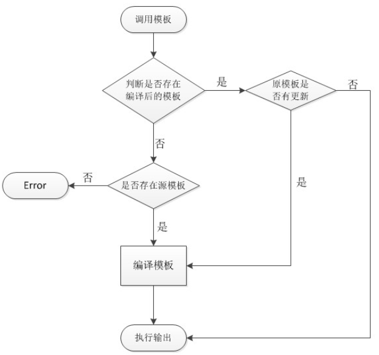

开发 - 模板机制¶
1. 模板制作¶
模板系统是前端展示的核心，Discuz! 将逻辑与显示彻底分离，开发者可自定义模板风格以匹配品牌、移动端适配、插件兼容等要求。
模板位置：
1. HTML书写规范¶
HTML 编写规范（强制要求）:
| 项目 | 规范示例 | 说明 |
|---|---|---|
| 属性值使用双引号 | <input type="text" value="abc" /> |
单引号会影响编译与兼容性 |
| 自闭合标签使用 /> | <img src="xx.jpg" /> |
防止浏览器差异性渲染 |
| HTML5 标签支持 | ✅ 支持 <nav>, <section> 等 |
但需兼容旧浏览器写法 |
| 禁用 JS 内联脚本 | ❌ 避免 <script>alert(1)</script> |
所有动态处理交给模板语法 |
模板缩进规范
Discuz! 模板 .htm 文件使用“逻辑缩进”，而不是 HTML 视觉层级缩进，目的是提升模板的结构清晰度并简化解析。
| 规则项 | 说明 |
|---|---|
| 统一使用 Tab | ❌ 禁用空格缩进 |
| 逻辑缩进优先 | 如循环、条件控制块内部缩进 |
| 模板块缩进 | 不依赖 HTML 标签嵌套缩进 |
<!--{loop $threadlist $thread}-->
<table>
<tr><td>{$thread[subject]}</td></tr>
</table>
<!--{/loop}-->
2. 模板概述¶
模板套系（Template Set）与风格（Style）的区别
| 概念 | 定义说明 |
|---|---|
| 模板套系 | 指一组完整的模板文件，如 .htm + .css + 图片，存放于 template/模板目录/。是模板系统的“骨架”。 |
| 风格（Style） | 是在某模板套系基础上，应用具体样式、图片、配色等外观配置的组合，是“外皮”。后台“风格管理”实际配置的是风格。 |
结构示意：
template/
├── default/ <- 模板套系（官方默认）
│ ├── common/ <- 公共模板部分
│ ├── forum/ <- 论坛模块模板
│ ├── home/ <- 家园空间模板
│ ├── style/ <- 所有配色（风格）子目录
│ │ ├── t1/style.css <- 配色方案 1
│ │ ├── t2/style.css <- 配色方案 2
│ └── style.css <- 默认 CSS 定义（风格核心样式）
├── mytheme/ <- 用户自定义模板套系
风格管理中的常量机制说明
Discuz! 支持在 CSS 文件中动态使用常量变量，支持自定义 + 后台控制，方便模板“风格”个性化展示。
常量与 CSS 动态绑定：
| 常量 | 说明 |
|---|---|
| {IMGDIR} | 界面基础图片目录 → 对应 $_G['style']['imgdir'] |
| {STYLEIMGDIR} | 扩展图片目录 → 对应 $_G['style']['styleimgdir'] |
| {FONTSIZE} | 正文字体大小，示例：14px/1.5 |
| {TABLETEXT} | 表格文本颜色 |
| {LINK} | 链接文字颜色 |
| {BGCOLOR} | 背景色 |
| {TESTCODE} | 🌟自定义模板变量（需后台添加） |
扩展配色机制说明
新增一个深色主题
自定义模板变量机制（动态调用 CSS 中变量）
使用场景： 当你希望允许用户切换字体大小、配色风格、边框颜色等属性时，可使用“模板变量”实现。
设置方式：
- 后台 → 界面 → 风格管理 → 编辑风格；
- “自定义模板变量” → 新增：
- 变量名：TESTCODE
- 默认值：#00FF00
- 在 CSS 中这样使用：
系统会将 {TESTCODE} 动态替换为用户当前风格配置的值。
版本机制说明（X3.4+）
- 所有风格变量从 $_G['style'] 数组中获取；
- 所有 {变量} 会在模板编译为 .tpl.php 时被替换；
- 所有风格配置会写入缓存（data/cache/style_*）以提升性能；
- 插件模板如果引用风格样式，需兼容 {STYLEIMGDIR} 或 {IMGDIR}。
实际开发建议（风格开发规范）
| 项目 | 建议做法 |
|---|---|
| 避免修改 default/ 模板 | 使用 template/mytheme/ 创建新模板 |
| 所有颜色、字号使用常量 | 在 CSS 中全部使用 {FONTSIZE} 等变量 |
| 公共模板统一引用 | 所有页头页脚统一用 |
| 模板内不要硬编码 URL | 使用 {$_G['siteurl']} 或 {STATICURL} |
| 自定义风格图片 | 放置在 style/xxx/images/，用 {STYLEIMGDIR}/xxx.png 引用 |
| 插件风格继承 | 插件模板也可调用全局风格变量，避免冲突 |
Discuz! 模板套系 & 风格系统优势
| 模块 | 说明 |
|---|---|
| 模板套系 | 一组 .htm 模板结构定义，负责结构 |
| 风格 | 一套样式文件 + 图片 + 变量配置，负责表现 |
| 常量机制 | CSS 使用变量绑定样式，方便切换和个性化 |
| 配色扩展 | 支持多主题切换，每个用户可设置偏好风格 |
| 开发维护成本 | 分离结构与样式、避免模板混乱，便于定制化与品牌化 |
3. 扩展新模板¶
核心原理：Discuz! 模板系统遵循模板优先级查找策略，通过 结构继承 + 配色扩展 + 可选复写 实现灵活的 UI 层扩展。
模板优先级加载路径：当系统渲染页面（如 forumdisplay）时，其模板加载逻辑为：
**结论：**你只需要修改需要变更的模板文件，其余继承默认模板结构。
扩展模板风格的制作步骤
- 新建模板目录结构
template/yourstyle/
├── common/ ← 可选复写的模块（如 header.htm）
├── forum/ ← 可选复写的模块
├── style/ ← 配色方案目录
│ └── t1/style.css ← 示例配色方案
├── discuz_style_yourstyle.xml ← 重要：风格定义文件
└── style.css ← 默认样式，不能缺省
- 复制并修改 XML 模板描述文件
从 template/default/discuz_style_default.xml 复制为：
必填字段：
<item id="name"><![CDATA[新风格名称]]></item>
<item id="templateid"><![CDATA[10]]></item> <!-- 注意不能与已安装ID冲突 -->
<item id="tplname"><![CDATA[yourstyle]]></item>
<item id="directory"><![CDATA[./template/yourstyle]]></item>
<item id="styleimgdir"><![CDATA[template/yourstyle/images]]></item>
XML 是后台风格管理识别风格信息的元文件。
- 添加可复写模板文件
只需添加需要复写的模板文件：
页面渲染时将使用该 header 模板，其余部分继续引用 template/default/ 中的其他文件。
扩展配色方案机制
文件路径：
css文件头部注释结构（必须有）：
用法说明：
- [name] 定义后台显示的名称；
- [iconbgcolor] 设置在后台管理中显示的预览色块；
- 用户可以在“界面设置”中自由切换。
动态样式加载机制：
实际前端模板（如 common/header.htm）中，系统自动加载以下样式：
生成 CSS 缓存时会将 style.css 与 extend_*.css 合并，配色方案是编译时合并后注入。
扩展 CSS 文件机制（动态追加）
如要扩展已有样式，无需重写整个文件，只需添加扩展文件：
- 扩展文件只写新增 / 覆盖样式；
- 编译缓存时将自动合并进 data/template/ 中；
- 避免重复复制大量 .htm 文件，只调 UI 即可。
2. 缓存机制¶
1. 模板缓存机制（Template Cache）¶
- 缓存位置：
/data/template/
缓存文件名格式：
- 缓存作用
Discuz! 会将 .htm 模板编译为 .tpl.php 的纯 PHP 可执行文件，用于直接 include 输出，避免每次解析模板语法。
- 调用流程

缓存更新规则：
| 场景 | 是否重新编译 |
|---|---|
| .htm 文件修改时间更新 | ✅ 是 |
| .tpl.php 文件被删 | ✅ 是 |
| 手动删除缓存目录 | ✅ 不影响系统自动重建 |
| 模板文件未变动 | ❌ 否（直接使用缓存） |
2. CSS 缓存机制（CSS Cache）¶
1. 缓存位置： /data/cache/
缓存文件命名规则：
2. 扩展样式文件机制：
可以通过以下方式为页面增加 定制样式扩展：
这些文件不会被单独加载，而是：在生成缓存文件时，会将其合并追加到最终 style_*.css 缓存中，提升加载效率。
3. CSS 扩展格式建议：
示例：
| 格式部分 | 含义 |
|---|---|
| forum:index | 对应页面入口为 forum.php?mod=index |
| forum:forumdisplay | 对应帖子列表页 |
| {FONTSIZE} | CSS 常量变量，由风格注入 |
这样写的好处是：
- 不修改模板本身就可以动态扩展样式；
- 自动根据页面入口选择加载合适样式；
- 可多点控制样式作用范围。
4. 样式文件编译流程
- 系统访问某模块（如论坛首页）；
- 加载对应模板缓存，如
forum_index.tpl.php； - 模板中引用样式如html：
<link href="data/cache/style_1_forum_index.css" rel="stylesheet" /> - 这个文件由系统生成，内容为：
- common.css + module.css
- 当前风格 style.css
- 所有 extend_common.css / extend_module.css
- 当前页面匹配的 CSS 片段（通过 /** forum:index **/ 识别）
5. 总结：Discuz! 缓存机制设计亮点
| 模块 | 优点 |
|---|---|
| 模板缓存 | 模板预编译为 .tpl.php，极大降低服务器模板解析压力 |
| CSS 缓存 | 自动合并风格 + 公共样式 + 扩展样式，提升渲染性能 |
| 动态样式注入 | 支持按模块、按风格、按用户动态切换 |
| 高扩展性 | 插件/模板/风格均可通过缓存机制统一接入 |
| 强兼容 | 未扩展的部分自动回退到默认模板套系 |
3. CSS扩展¶
1. CSS 扩展机制概述（extend_*.css）¶
在 Discuz! 模板系统中，你只需写你要改动的 CSS 样式到扩展文件里，系统会在生成缓存 CSS 文件时自动追加整合。
路径示例：
这些文件的内容会自动合并到系统最终生成的缓存 CSS 文件中，例如：
/data/cache/style_1_forum_forumdisplay.css
2. CSS 继承加载机制（加载顺序）¶
Discuz! 的样式文件缓存合并是按照以下顺序执行的（后加载优先，覆盖前者）：
| 加载顺序 | 来源位置 |
|---|---|
| ① | template/default/common/*.css |
| ② | template/yourstyle/common/extend_*.css |
| ③ | template/yourstyle/style.css |
| ④ | source/plugin/插件ID/template/extend_*.css |
每一级都可以追加/覆盖前一级定义的样式，因此风格主题、插件样式都可以独立维护。
3. module.css 的模块化结构与语法¶
默认文件路径： template/default/common/module.css
扩展路径： template/yourstyle/common/extend_module.css
4. CSS 书写规范（Discuz 官方推荐）¶
| 项目 | 建议 |
|---|---|
| 属性书写一行内 | .box |
| 属性名与值之间留空格 | 遵循统一格式 |
| 浏览器前缀顺序 | -webkit-, -moz-, 标准属性 |
| 样式由外到内书写顺序 | position → box → border → text → others |
| 不滥用 ID | 使用 .class 优先，避免 #id 冲突 |
| 缩写类命名规则 | 例如：.cl 需注释说明为 .clearfix |
| 忌用低效嵌套 | ❌ ul li a span {} → 推荐 .nav-link {} |
| 忌滥用 !important | 仅在必要时使用 |
4. 标签语法¶
模板解析核心逻辑文件为：
Discuz! 模板语言并非标准 PHP，而是自定义语法经过解析器转为 PHP 再执行。下面我们分类详细讲解。
1. 模板嵌套语法¶
Discuz! 支持两种模板嵌套方式：
| 标签类型 | 功能描述 |
|---|---|
| subtemplate | 编译时将目标模板嵌入当前模板，提升性能 |
| template | 运行时 include 模板文件，灵活可变 |
示例：
建议：
- 如果模板调用频繁、结构固定，用 subtemplate；
- 如果需要根据变量动态切换，用 template。
2. 逻辑判断语法（if/elseif/else）¶
3. 循环语法（loop）¶
| 形式 | 语法格式 |
|---|---|
| 有键值 | <!--{loop $arr $key $val}--> |
| 无键值（仅值） | <!--{loop $arr $val}--> |
4. 执行 PHP 表达式（eval 和 echo）¶
{$var} 与 <!--{echo $var}--> 等效，但花括号语法更清晰，推荐使用。
5. 插件钩子标签（Hook）¶
用于插件扩展模板内容，形式统一为：
插件机制说明：
- 插件在 XML 中声明了 hook；
- 在模板对应位置添加 hook 标签；
- 插件的 HTML、JS、CSS 就会注入到模板。
6. 广告嵌入标签（AD）¶
Discuz! 自带广告管理系统，通过模板标签插入：<!--{ad/headerbanner/wp a_h}-->
常用广告位：
| 标签 | 显示位置 |
|---|---|
| ad/headerbanner | 页头横幅 |
| ad/thread/a_pb | 帖子楼层间 |
| ad/footerbanner | 页脚横幅 |
7. 语言包调用标签（lang）¶
Discuz! 所有文字都可以使用语言包统一管理，国际化、主题风格多语言切换都依赖此机制。
source/language/lang_template.php
source/language/模块/lang_xxx.php
source/plugin/yourid/language/lang_template.php #在插件中自定义语言包
5. 模板文件结构附录¶
1. Discuz! 模板体系结构总览¶
template/default/
├── common/ 公共模板（头尾、导航、提示）
├── forum/ 论坛相关（发帖、看帖、评分）
├── group/ 群组系统（创建、成员、列表）
├── home/ 个人空间（动态、日志、相册）
├── member/ 用户模块（注册、登录、资料）
├── portal/ 门户系统（频道、文章、专题）
├── search/ 搜索结果页面
├── userapp/ UCenter 相关应用扩展
├── style/ 配色目录（风格方案）
2. 公共模板文件夹 ./template/default/common/¶
| 文件名 | 说明 |
|---|---|
| header.htm | 页头 HTML 输出（包含顶部导航、meta、风格引用） |
| footer.htm | 页脚输出 |
| header_common.htm | 页头的通用逻辑代码，如 SEO 信息 |
| header_ajax.htm | 用于 AJAX 弹出式页面的头部（注册/登录） |
| footer_ajax.htm | AJAX 页尾 |
| header_diy.htm | DIY 模式下头部模板（频道/首页） |
| faq.htm | 帮助页 |
| invite.htm | 邀请页面模板 |
| preview.htm | 页面预览模板 |
| showmessage.htm | 提示框模板（系统信息/跳转提示） |
| userabout.htm | 用户中心面板模板 |
| common.css | 全局样式表（最基础） |
| module.css | 支持模块化加载的样式（分模块注释块） |
| widthauto.css | 宽屏样式补丁 |
| forum_calendar.css | 日历控件样式 |
| forum_moderator.css | 管理面板样式表 |
3. 论坛模板文件夹 ./template/default/forum/¶
| 模板页 | 说明 |
|---|---|
| discuz.htm | 论坛首页（forum.php） |
| forumdisplay.htm | 主题列表页面主模板 |
| forumdisplay_list.htm | 帖子列表子模板 |
| forumdisplay_passwd.htm | 加密板块输入密码模板 |
| forumdisplay_subforum.htm | 子版块显示模板 |
| viewthread.htm | 看帖主模板（帖子内容页） |
| viewthread_fastpost.htm | 快速回复框模板 |
| viewthread_node.htm | 楼层结构（多层结构） |
| viewthread_mod.htm | 帖子管理记录显示模板 |
| post.htm | 发帖页主模板 |
| post_activity.htm | 活动帖发布 |
| post_poll.htm | 投票帖发布 |
| post_trade.htm | 交易帖发布 |
| post_reward.htm | 悬赏帖发布 |
| rate.htm | 帖子评分页 |
| recommend.htm | 主题推荐页 |
| attachpay.htm | 附件金币支付模板 |
| announcement.htm | 公告页面 |
| collection_index.htm | 淘帖首页 |
| collection_view.htm | 专辑内容页 |
| ajax_attachlist.htm | 附件异步加载模板 |
说明：每种帖子类型如 poll, trade, reward, debate 都有各自的 post_.htm 和 viewthread_.htm 模板，体现 内容发布 和 阅读展示 的完全分离。